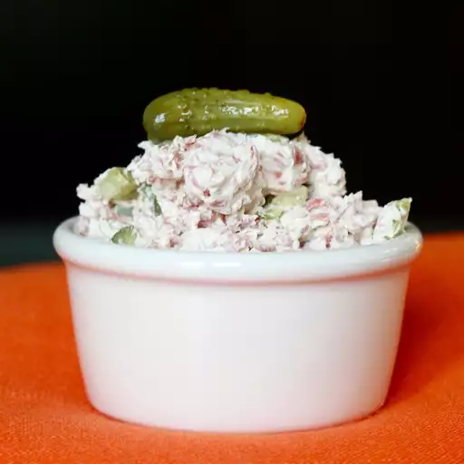

Homepage

Description
An easier version of my family's favorite snack. I used to make them as a wrap but I find this so much easier! Serve with whole wheat crackers.
Ingredients
- 1 (8 ounce) package softened cream cheese
- 6 dill pickle spears, diced
- 1 (2 ounce) package thinly sliced dried beef, chopped
Steps
- Mix together the softened cream cheese, diced pickle, and chopped beef until well combined. Chill until ready to serve.